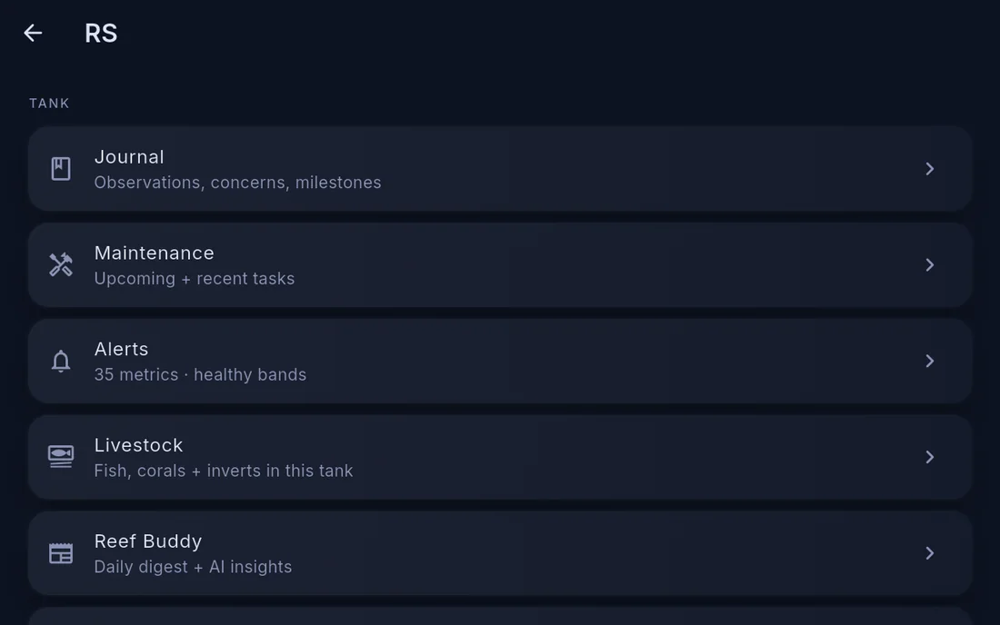

Alerts on Cora Max
Alert pills
Anything currently out of range appears as a pill in the top bar, with +n when there are more than fit. Tap a pill to see the full list.
The pills are the reason Cora Max works as a wall display: the tank's problems are visible from across the room without touching anything.
The notification inbox
Settings → Notification history is the account-wide inbox — every briefing, alarm and account notice for your whole system, not just what this screen raised. It includes anything your phone missed.
Alerts can also be snoozed per device, so a unit you are working on stops chiming without silencing the alert everywhere.
Editing thresholds

Settings → Tank settings → Thresholds edits the same ranges as the phone. A change made here applies everywhere.
Individual thresholds can also be edited by opening a widget on the dashboard.
See Alerts and thresholds for how ranges and rules work.
Written for Cora Max 0.28.32 and Cora Mobile 0.5.53.
Still stuck? Email cora@coraiq.tech and we'll help.